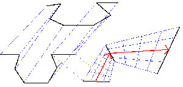
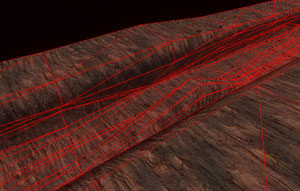
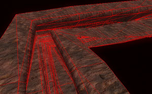
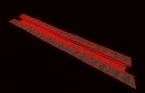
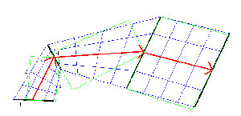
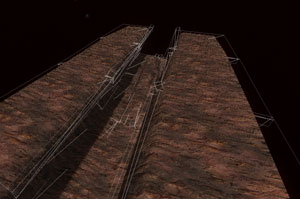

| Computer Graphics TU Braunschweig |
Der Canyon wird anders als die Modelle aus bestimmten Daten generiert. Die Daten sind mehrere zweidimensionale Punkte, die ein Profil darstellen und ein dreidimensionaler Vektor, der die Richtung angibt, in welche dieses Profil zu dem nächsten Profil interpoliert werden soll.
|  |
| (a) Canyon 1 |
In Abbildung (a) sieht man auf der linken Seite zwei Profile in Schwarz und wie der Canyon zwischen den beiden Profilen aufgespannt wird. Auf der rechten Seite ist ein Ausschnitt von zwei Punkten des Profils gezeigt. Der rote Pfeil ist der Richtungsvektor, in dessen Richtung das Profil aufgespannt wird. Man sieht in diesem Bild, dass das zweite Profil senkrecht zu dem Mittelwert der beiden Richtungsvektoren steht, damit der Kurvenübergang möglichst weich ist. Ein Profil muss immer dieselbe Anzahl von Profilpunkten besitzen.
|  |  |
| (b) Canyon 1 | (c) Canyon 3 |
Im Spiel selbst wird immer nur der dem Spieler sichtbare Canyon angezeigt, um nicht überflüssig Ressourcen zu verbrauchen. Das heißt, dass hinter dem Spieler die Segmente löscht werden und neue Segmente weiter vor dem Spieler angezeigt werden.
|  |
| (d) Canyon 4 |
Zusätzlich zu dem Canyonpunkten werden auch die Boundingboxes generiert. Die Erstellung wird auch anhand der Profildaten durchgeführt. Dabei werden wieder zwei Punkte von dem einen und dem darauf folgenden Profil genommen und durch Mittelung eine Box über diese Punkte gelegt.
|  |
| (e) Canyon 5 |
In Abbildung (e) sieht man, wie die Boundingboxes auf die aufgespannten Profile gelegt werden. Die Ausrichtung der Box richtet sich dabei nach der ersten Profilgeraden (Punkt 1). Die Breite wird durch jeweils eine Senkrechte durch die Punkte 2 und 3 festgelegt, die jeweils Mittelpunkte der aufgespannten Vektoren sind. Die Länge wird durch eine Parallele durch den Punkt 4 festgelegt. So bleiben bei sehr extremen Profilunterschieden kleine Lücken, die aber aufgrund der Größe des Gleiters das Spiel kaum beeinflussen. Wie die Boundingboxes im Spiel ausssehen zeigt Abbildung (f):
|  |
| (f) Canyon 6 |
Der Leveleditor bietet die Möglichkeit einen Canyon generieren zu lassen. Dabei baut man sich eine bestimmte Anzahl von Profilen, wählt diese als Referenzen aus und es wird ein Canyon auf Basis von Angaben zur Kurvigkeit und Höhenunterschiedlichkeit generiert.
TU Braunschweig
- Fakultät für Mathematik und Informatik
- Computer Graphics - Teamprojekt Canyonshooter
{kind=link}
{kind=link}
{kind=link}
{kind=link}
{kind=link}
{kind=link}